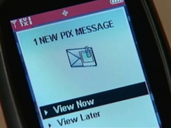

Please contact techsupport@regis.edu if you need assistance or to report any problems.
Please contact techsupport@regis.edu if you need assistance or to report any problems.
© 2010 Regis University. All rights reserved.

Over the years, the courts have made many decisions regarding what kinds of communication are obscene and whether or not such communications are protected by our First Amendment rights to freedom of expression. The line between what is legal and what is not has been in constant flux. Now comes a new test for our society: sexting. Sexting – sending sexual messages, nude or seminude photos, or sexually explicit videos over a cell phone – is a fast-growing trend among teens and young adults. According to a survey by the National Campaign to Prevent Teen and Unplanned Pregnancy, one in five teenagers has engaged in sexting, including 22% of teen girls, 18% of teen boys, and 11% of young teen girls aged 13 to 16. Increasingly, teens are suffering the consequences of this new fad.
Jessie Logan was a good kid – lively, artistic, and fun. But in her last year at Sycamore High School, she made a terrible mistake. She used her cell phone to take nude photos of herself and then sent them to her boyfriend. After the couple broke up, Jessie’s ex-boyfriend forwarded the photos to several other teenage girls; eventually, the pictures were sent to hundreds of teens in the Cincinnati area. Classmates, and even kids she did not know, started teasing her. They called her a tramp and worse; some even threw things at her. Instead of attending classes, she began sleeping in her car in the school parking lot or hiding in the bathroom, skipping classes to avoid further embarrassment. She stopped interacting with her friends, and her grades dropped. Finally, in the summer of 2008, Jessie was so full of despair that she hanged herself.
Jessie’s mother, Cynthia Logan, wondered why school officials and authorities didn’t do more to help Jessie. The school superintendent, Adrienne James, said that the sexting problem had been addressed at a parents’ meeting. No other action could be taken, James said, because some of the students involved attended other school districts and because Jessie had taken the photos at home – not at school. A school resource officer said that he reprimanded students who harassed Jessie. The officer also spoke to a prosecutor who told him that nothing could be done because Jessie was 18 years old.
But were Jessie’s ex-boyfriend’s actions legal? Certainly, if they involved exposing underage children to the nude photos, the ex-boyfriend would have been violating laws protecting children from exploitation and pornography. To date, however, the ex-boyfriend and other students who distributed the photos have not been arrested or charged with any crime.
Authorities, however, are starting to come down hard on teens under the age of 18 who engage in sexting:
Teens are also increasingly being charged for merely exchanging nude photos of themselves over their cell phones. A group of Pennsylvania teenagers may be charged with disseminating and possessing child pornography after three 13-year-old girls sent nude or seminude images of themselves to three 16- and 17-year-old boys. Two Ohio teenagers, four Alabama middle-school students, and many teens in other states have been arrested on similar charges for taking and sharing nude or seminude photos of themselves.
Across the nation, lawmakers and citizens have begun to debate whether teenagers involved in sexting should be charged with such serious child-porn related offenses. Some people argue that applying child pornography laws to teens is too harsh – that the purpose of these laws is to protect children, not prosecute them. In Utah, the legislature recently changed sexting from a felony to a misdemeanor. Authorities in Montgomery County, Ohio, have created a program for teens arrested for sexting. This program will prevent some first-time offenders from being registered as sex offenders – a designation that can stay with them for up to 20 years. In other instances, authorities have not prosecuted teens under child pornography laws but have brought them up on lesser charges.
The crackdown is part of a greater effort to send a message: sexting can be dangerous. The practice can have serious consequences, which those who engage in it may not initially be aware of – creating a situation that can get out of hand very easily. In 24% of the 2,100 cases of child pornography that the National Center for Missing and Exploited Children has handled, the children took the photos themselves. Sometimes these photos are used for purposes other than just distribution. In Wisconsin, a teenage boy enticed other boys at his school to sext him by pretending to be a girl. He then blackmailed seven of them into performing sexual favors for him in exchange for not distributing their photos.
When photos depict a person who is over 18, the recipient often has the right to share these photos with others who are over 18 – even when sharing is not the “right” thing to do. In these cases, there’s no legal recourse for anyone to take to stop that person. In the meantime, underage participants – those who have the least life experience to help them make good decisions – are being held accountable. Until we learn how to deal with this new phenomenon appropriately in homes, in schools, and in the courts, many teens and young adults will likely continue to get hurt.
Reference: Reynolds, G. (2010). Ethics in Information Technology (3rd ed.). Boston, MA. Cengage.
 Please contact techsupport@regis.edu if you need assistance or to report any problems.
Please contact techsupport@regis.edu if you need assistance or to report any problems.
© 2010 Regis University. All rights reserved.